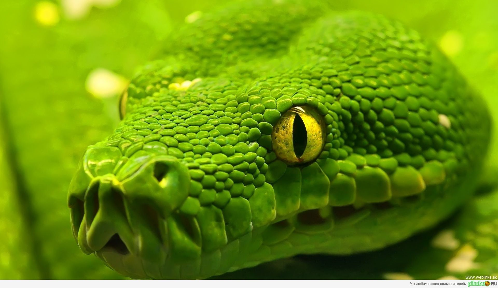

Зме́и (лат. Serpentes) — подотряд класса пресмыкающихся отряда нескольких крупных островов, таких как Ирландия и Новая Зеландия, а также множества мелких островов Атлантического океана и центральной части Тихого океана.
Некоторые змеи ядовиты, но неядовитые представлены бóльшим количеством видов. Ядовитые пользуются ядом в первую очередь для охоты (чтобы убить жертву), а не для самозащиты. Яд некоторых видов достаточно силён, чтобы убить человека. Неядовитые змеи либо заглатывают добычу живьём (ужи), либо предварительно убивают (удушают) её (полозы, удавы). Самые крупные известные змеи из ныне живущих на Земле — сетчатый питон и водяной удав анаконда. Длина самых мелких змей из ныне живущих — Leptotyphlops carlae — не превышает 10 сантиметров[2]. Размер большинства змей не превышает одного метра[3]. Изучением змей занимается серпентология.